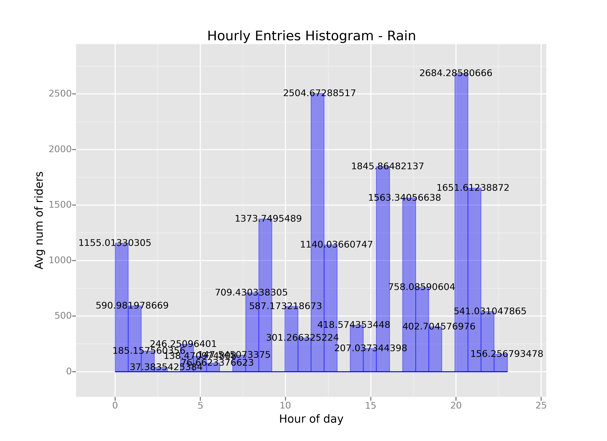

Short Questions to Analyzing the NYC Subway Dataset
Analyzing the NYC Subway Dataset
Short Questions
Overview
This project consists of two parts. In Part 1 of the project, you should have completed the questions in Problem Sets 2, 3, 4, and 5 in the Introduction to Data Science course.
This document addresses part 2 of the project. Please use this document as a template and answer the following questions to explain your reasoning and conclusion behind your work in the problem sets. You will attach a document with your answers to these questions as part of your final project submission.
1.1 Which statistical test did you use to analyze the NYC subway data? Did you use a one-tail or a two-tail P value? What is the null hypothesis? What is your p-critical value?
The ridership mean for when it rains is 1105.45 and 1090.28 without rain.
U = 1924409167.0
P value = 0.04999982558
I Used a two-tail p value here (by multiplying the p value from the scipy method by 2). The null hypothesis tests that the two populations have equal medians. The p value of 0.0499 says that we must reject the null hypothesis.
1.2 Why is this statistical test applicable to the dataset? In particular, consider the assumptions that the test is making about the distribution of ridership in the two samples.
This statistical test is applicable because the populations are independent and it may not be normal.
1.3 What results did you get from this statistical test? These should include the following numerical values: p-values, as well as the means for each of the two samples under test.
I got a p value of 0.04999982558 ridership mean for when it rains is 1105.45; and 1090.28 without rain.
1.4 What is the significance and interpretation of these results?
From the test, the difference is significant enough (barely) to reject the null hypothesis. Thus the medians of the ridership are different for when it rains vs for when it does not rain.
2.1 What approach did you use to compute the coefficients theta and produce prediction for ENTRIESn_hourly in your regression model:
Gradient descent (as implemented in exercise 3.5)
OLS using Statsmodels
Or something different?
I used OLS using Statsmodels
2.2 What features (input variables) did you use in your model? Did you use any dummy variables as part of your features?
I initially tried an extreme ['rain', 'meanwindspdi', 'fog', 'meandewpti', 'meanpressurei', 'precipi', 'Hour', 'meantempi'] and Units (dummy variable) with an R^2 of 0.484. It turns out that less features like [ 'Hour', 'precipi', 'maxtempi' ] and Units (dummy variable) gives a R^2 of 0.483. So it appears that a handful should explain away the prediction model. I'll settle for [ 'Hour', 'precipi', 'maxtempi' ] and Units.
2.3 Why did you select these features in your model? We are looking for specific reasons that lead you to believe that
the selected features will contribute to the predictive power of your model.
Your reasons might be based on intuition. For example, response for fog might be: “I decided to use fog because I thought that when it is very foggy outside people might decide to use the subway more often.”
Your reasons might also be based on data exploration and experimentation, for example: “I used feature X because as soon as I included it in my model, it drastically improved my R2 value.”
As said above, it's from experimentation but also intuition. There are features that seems redundant such as 'rain' and 'precip'. Initially
['rain', 'meanwindspdi', 'fog', 'meandewpti', 'meanpressurei', 'precipi', 'Hour', 'meantempi'] and Units gave R^2 of 0.484 which was good but there's redundant features in there such as 'rain' and 'precipi'. From experimentation and intuition, it would appear that Units, temperature and rain would be great influence for the ridership numbers.
2.4 What are the coefficients (or weights) of the non-dummy features in your linear regression model?
Hour: 430.1710
Precipi: 20.6068
maxtempi: -57.6173
2.5 What is your model’s R2 (coefficients of determination) value?
0.483
2.6 What does this R2 value mean for the goodness of fit for your regression model? Do you think this linear model to predict ridership is appropriate for this dataset, given this R2 value?
This R^2 says that the fit is good but a linear model may not be ideal here.
Please include two visualizations that show the relationships between two or more variables in the NYC subway data.
Remember to add appropriate titles and axes labels to your plots. Also, please add a short description below each figure commenting on the key insights depicted in the figure.
3.1 One visualization should contain two histograms: one of ENTRIESn_hourly for rainy days and one of ENTRIESn_hourly for non-rainy days.
You can combine the two histograms in a single plot or you can use two separate plots.
If you decide to use to two separate plots for the two histograms, please ensure that the x-axis limits for both of the plots are identical. It is much easier to compare the two in that case.
For the histograms, you should have intervals representing the volume of ridership (value of ENTRIESn_hourly) on the x-axis and the frequency of occurrence on the y-axis. For example, each interval (along the x-axis), the height of the bar for this interval will represent the number of records (rows in our data) that have ENTRIESn_hourly that falls in this interval.
Remember to increase the number of bins in the histogram (by having larger number of bars). The default bin width is not sufficient to capture the variability in the two samples.
Toss in some labels here:
3.2 One visualization can be more freeform. You should feel free to implement something that we discussed in class (e.g., scatter plots, line plots) or attempt to implement something more advanced if you'd like. Some suggestions are:
Ridership by time-of-day
Ridership by day-of-week
This is the ridership for hours in a day.
Please address the following questions in detail. Your answers should be 1-2 paragraphs long.
4.1 From
your analysis and interpretation of the data, do more people
ride
the NYC subway when it is raining or when it is not
raining?
It appears that there is no substantial difference between the amount of riders for when it rains and when it does not rain with this dataset. We were barely able to reject the null hypothesis (p value of 0.049). The visualizations does confirm that. The first plot shows the average amount of riders for hours of the day when it rained and when it did not rained. This is believable from my experience living in Boston if the trains are the only mode of transporation to get around for decent distances. For short distances, walking might be a better option for a nice sunny day.
4.2 What analyses lead you to this conclusion? You should use results from both your statistical
tests and your linear regression to support your analysis.
Please address the following questions in detail. Your answers should be 1-2 paragraphs long.
5.1 Please discuss potential shortcomings of the methods of your analysis, including:
Dataset,
Analysis, such as the linear regression model or statistical test.
From what we know with trains, it would be nice to also know about outages that may be happening at a station for a given date that might influence the data.
5.2 (Optional) Do you have any other insight about the dataset that you would like to share with us?